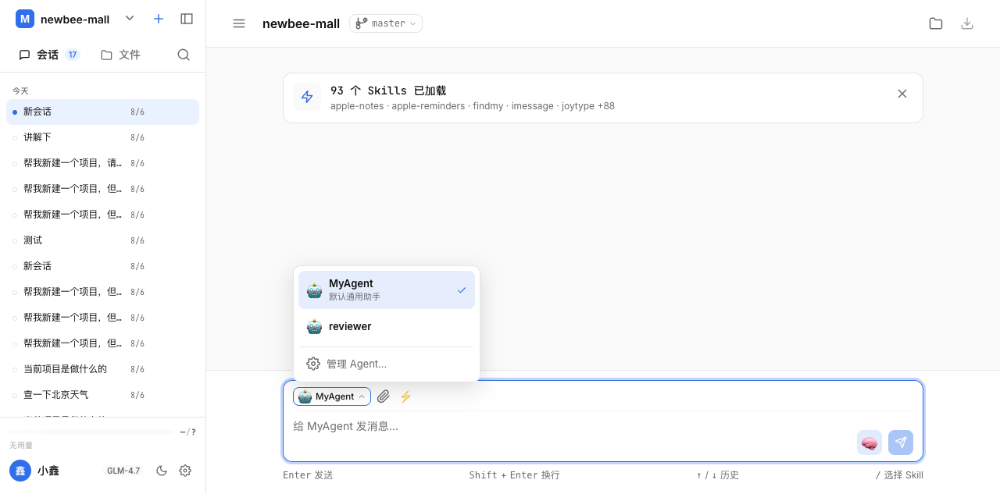
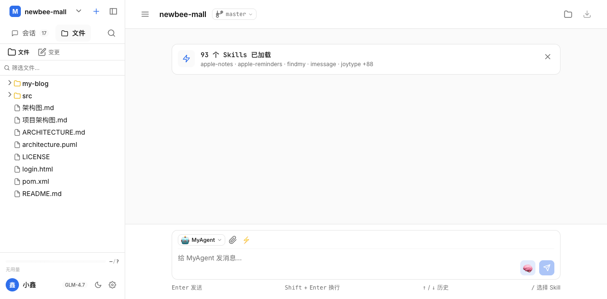
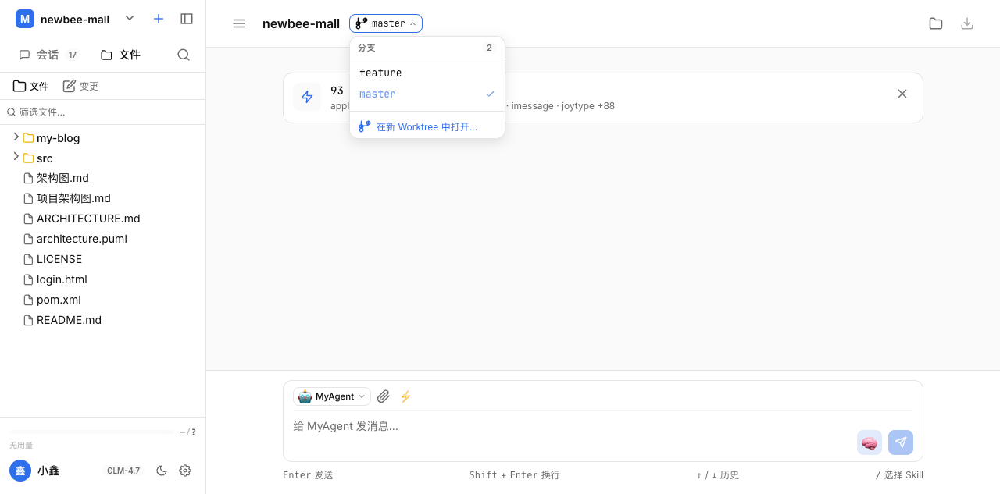
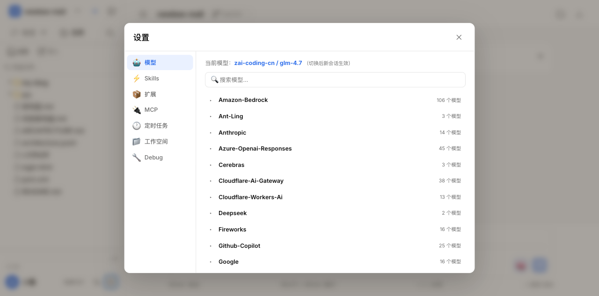

MyAgent 用户使用文档
MyAgent 是一个基于 AI 的智能编程助手，支持代码阅读、编写、调试、文件管理、Git 操作等全流程开发工作。

核心能力一览
- 核心 智能对话：理解项目上下文，支持思考模式、多轮对话
- 核心 文件管理：内置文件树、代码预览、Diff 查看
- 核心 代码引用：选中代码片段或整文件，直接添加到对话上下文
- Git 分支切换：在标题栏快速切换 Git 分支
- Git Worktree：创建 Git Worktree 实现多分支并行开发
- 交互 智能提问：Agent 遇到歧义时主动向你提问（单选/多选）
- 技能 Skills 系统：/ 触发技能选择器，加载领域知识
- 子 Agent：委派子任务给独立的 AI Agent 并行处理
- 定时任务：Cron 语法定时触发 Agent 执行
快速开始
1. 启动应用
在项目根目录执行：
pnpm dev服务启动后，浏览器打开 http://localhost:5173。
2. 添加项目
首次使用，点击左侧侧栏顶部的工作空间切换器，选择「添加项目」，在文件浏览器中选择你的项目目录。
3. 开始对话
在底部输入框输入消息，按 Enter 发送。MyAgent 会根据你的项目上下文给出回答。
工作空间管理
添加项目
点击左上角「M」品牌图标 → 弹出工作空间下拉菜单 → 点击「添加项目」→ 在文件浏览器中选择目录。
切换项目
点击工作空间下拉菜单中的项目名即可切换。切换后会自动加载该项目的会话列表和文件树。
切换项目时，当前项目路径会显示在标题栏（hover 项目名可见 tooltip）。
在 Finder 中打开
标题栏右侧有文件夹图标按钮，点击在 macOS Finder 中打开当前项目目录。
会话管理
新建会话
点击侧栏左上角 + 按钮或按快捷键 ⌘ N 创建新会话。每个会话有独立的上下文和消息历史。
切换会话
点击侧栏会话列表中的任意会话即可切换。会话按时间分组（今天、昨天、更早）。
置顶会话
点击会话右侧的 📍 按钮可以置顶/取消置顶。置顶的会话始终显示在列表最上方。
删除会话
点击会话右侧的删除按钮，确认后删除该会话及其所有消息。
搜索会话
按 ⌘ K 打开会话搜索，输入关键词搜索历史会话。
~/.myagent/chat-sessions/，刷新页面或重启服务不会丢失。
智能对话
发送消息
在输入框输入文本，Enter 发送，Shift + Enter 换行。支持 Markdown 格式渲染。
发送图片
点击工具栏的 📎 按钮添加图片，或直接拖拽图片到输入框。如果当前模型不支持 Vision，Agent 会自动调用 analyze_image 工具识别图片内容。
思考模式 推荐
点击工具栏 🧠 按钮开启/关闭思考模式。开启后模型在回答前会先"思考"（输出推理过程），思考内容显示在对话区的「过程」面板中（默认折叠）。
思考模式适合复杂推理任务，如代码调试、架构设计、方案选择。
过程面板
每条 AI 回复上方有一个「过程」折叠面板，展开可以看到：
- 思考过程：模型的推理链
- 工具调用：执行了哪些工具（read、bash、search 等），输入输出详情
- 技能加载：加载了哪些 Skill
- 子 Agent：委派的子任务及其进度
停止生成
生成过程中点击右下角红色 ✕ 按钮可以中止当前生成。
重新生成
在最后一条 AI 回复下方有「🔄 重新生成」按钮，点击会重新执行上一轮对话。
Agent 角色管理

什么是 Agent 预设
Agent 预设是一套带有自定义系统提示词（System Prompt）的角色配置。不同的 Agent 有不同的专业领域和行为方式。
切换 Agent
点击输入框工具栏最左侧的 Agent 按钮（显示当前 Agent 名称），在下拉菜单中选择。切换后当前会话会使用新 Agent 的角色指令。
创建 Agent 预设
点击下拉菜单底部的「管理 Agent…」→ 在弹窗中：
- 填写 Agent 名称（如 "代码审查专家"）
- 选择图标
- 填写系统提示词（如 "你是一个严格的代码审查专家，重点关注安全性、性能和可维护性…"）
- 可选：禁用某些工具
输入框与工具栏
输入框上方有一排工具栏，从左到右：
| 按钮 | 功能 | 说明 |
|---|---|---|
| 🤖 Agent 选择器 | 切换 Agent 角色 | 显示当前 Agent 名称，点击弹出切换菜单 |
| 📎 附件 | 添加图片 | 支持拖拽和点击两种方式 |
| ⚡ 快捷指令 | 插入预设指令 | 可在管理面板中自定义常用指令 |
| 🧠 思考开关 | 开启/关闭思考模式 | 开启后模型先推理再回答 |
| 📤 发送/停止 | 发送消息或停止生成 | 生成中变为红色停止按钮 |
快捷指令
点击 ⚡ 按钮弹出快捷指令面板。你可以添加常用指令模板（如 "解释这段代码"、"帮我写单元测试"），点击即插入到输入框。
输入历史
在输入框中按 ↑ / ↓ 可以浏览之前发送过的消息。
文件树与预览

浏览文件
点击侧栏「文件」Tab 切换到文件树视图。点击文件夹展开/折叠，点击文件在右侧预览面板打开。
文件搜索
在文件树上方的搜索框输入文件名关键词，实时过滤匹配的文件。
代码预览
点击任意文件，右侧打开预览面板，支持：
- 源码模式：语法高亮 + 行号显示
- Diff 模式：查看本次会话中的文件变更
- Markdown 渲染：.md 文件自动渲染
- HTML/SVG 预览：实时渲染网页效果
拖拽调宽
预览面板和侧栏都支持拖拽边缘调宽，适配你的屏幕。
添加文件到上下文 新增
整文件添加
在文件树中，鼠标 hover 到任意文件上，右侧会出现一个 + 按钮。点击后：
- 自动读取文件内容（超过 300 行自动截断）
- 在输入框上方显示一个带「全文」标签的 chip
- 发送消息时，文件内容会作为上下文附在消息末尾
查看已添加的文件
输入框上方的 chip 栏会列出所有引用。整文件引用显示 📄 图标和「全文」标签，代码片段引用显示 { } 图标和行号。点击 chip 上的 ✕ 可以移除。
代码片段引用
选中代码引用
在右侧文件预览面板中，用鼠标选中若干行代码。选中后会出现一个操作条：
- 显示选中的行号范围（如 L15-L30）
- 点击「引用到对话 ↑」将选中的代码加入输入框上下文
多个引用
支持同时添加多个代码片段引用。每个引用会以 chip 形式显示，发送时全部拼接到消息中。
变更追踪
变更面板
点击侧栏「文件」Tab 下的「变更」子标签，查看当前会话中 Agent 修改过的所有文件。
- 统计信息：修改了几个文件、几次编辑、执行了几条命令
- 文件列表：每个文件的编辑次数、修改状态（成功/出错）
- 子 Agent 变更：标注 🤖 图标，区分手动还是子 Agent 修改
查看 Diff
在变更列表中点击任意文件，预览面板切换到 Diff 模式，显示本次会话中的修改详情。
Git 分支切换 新增

查看当前分支
标题栏项目名右侧显示当前 Git 分支名（带分支图标）。如果不是 Git 仓库则不显示。
切换分支
点击分支名按钮 → 弹出分支列表 → 点击目标分支。切换后文件树自动刷新到新分支的内容。
智能 Worktree 切换
如果目标分支已在某个 Worktree 中检出（git checkout 会报错），MyAgent 会自动检测并切换到对应的 Worktree 工作空间，无需手动处理。
Worktree 多分支并行 新增
什么是 Worktree
Git Worktree 允许你把不同分支检出到独立目录，共享同一个 Git 仓库。这样你可以同时操作多个分支，互不影响。
创建 Worktree
点击标题栏分支名 → 底部「在新 Worktree 中打开…」→ 弹出创建对话框：
- 新分支模式：输入新分支名 + 选择基于哪个分支创建
- 现有分支模式：选择一个已有分支检出为独立目录
- 底部显示 Worktree 的目标路径预览
点击「创建并切换」后，自动创建目录、注册为新工作空间、切换过去。
路径规则
Worktree 自动创建在主仓库的同级目录下，命名为 项目名-分支名。例如 newbee-mall-feature-login。
Worktree另开目录，每个分支独立工作。适合需要频繁在多个分支间切换的场景。
内置工具
MyAgent 内置了一套完整的编程工具集，由 Pi Coding Agent SDK 提供。Agent 会根据任务自动选择合适的工具。
SDK 内置工具（文件操作 + 命令执行）
| 工具 | 功能 | 典型场景 |
|---|---|---|
read | 读取文件内容 | 查看代码、读取配置 |
write | 创建/覆盖文件 | 新建文件、重写代码 |
edit (patch) | 精确编辑文件片段 | 修改部分代码、修 Bug |
bash | 执行 Shell 命令 | 运行测试、安装依赖、git 操作 |
search | 搜索文件内容（ripgrep） | 查找函数定义、搜索关键词 |
glob | 按模式匹配文件 | 查找所有 .py 文件、列出图片 |
find 和 ls 工具默认被禁用（用 search 和 glob 替代，更快更安全）。可在 Agent 预设中调整。
MyAgent 自定义工具
| 工具 | 功能 | 典型场景 |
|---|---|---|
todo | 任务清单管理（增删改查） | 多步骤任务拆解和跟踪 |
delegate_task | 委派子任务给独立子 Agent | 并行处理、复杂任务分解 |
analyze_image | 图片识别（调用 Vision 模型） | 分析截图、识别 UI 设计图 |
zai_web_search | 联网搜索（智谱 Web Search API） | 查最新动态、搜索文档 |
web_fetch | 抓取网页内容转纯文本 | 阅读文章、获取 API 文档 |
cron | 管理定时任务（创建/暂停/删除） | 设置定期执行的任务 |
ask_user 新增 | 向用户提问（单选/多选） | 需求澄清、确认选项 |
1.
search 搜索 "console.log" → 拿到所有匹配的文件和行号2. 逐个
read 确认上下文 → edit 删除对应行3.
bash 运行 grep -c console.log 验证结果
1.
zai_web_search 搜索 "React 19 新特性" → 获取多条搜索结果2.
web_fetch 抓取最相关的文章 → 读取完整内容3. 总结整理后回复你
扩展系统
MyAgent 支持通过扩展包（Extension Packages）增强 Agent 的能力。扩展可以来自 npm 包或 Git 仓库，安装后自动注册为 Agent 可用的工具。
查看已安装扩展
打开设置面板 → 切换到「扩展」Tab，可以看到所有已安装的扩展包列表，包括每个包提供的工具数量和来源。
内置扩展
MyAgent 自带两个扩展包：
| 扩展包 | 功能 | 说明 |
|---|---|---|
@myagent/pi-todo-extension | Todo 任务管理 | 提供 todo 工具，支持任务增删改查、状态流转、持久化到 ~/.myagent/todos.json |
@myagent/pi-subagent-extension | 子 Agent 委派 | 提供 delegate_task 工具，支持委派独立子任务给子 Agent 并行处理 |
安装第三方扩展
在设置面板的扩展 Tab 底部，输入扩展来源地址进行安装：
- npm 包：
npm:@scope/package-name或npm:package-name - Git 仓库：
git:https://github.com/user/repo.git
安装后扩展自动注册工具，下次创建 Agent 时生效。
卸载扩展
在扩展列表中点击卸载按钮，移除扩展包及其工具。
npm:@earendil-works/pi-web-access → 安装。安装后 Agent 获得浏览器访问能力，可以打开网页、点击按钮、截图等。
MCP 服务器
什么是 MCP
Model Context Protocol (MCP) 是一种标准化的外部工具接入协议。通过 MCP 服务器，Agent 可以连接外部服务（数据库、API、本地工具等）获得额外能力。
管理 MCP 服务器
打开设置面板 → 切换到「MCP」Tab：
- 查看已配置的 MCP 服务器列表
- 启用/禁用各个服务器
- 查看每个服务器提供的工具数量
配置文件
MCP 配置存储在 ~/.myagent/mcp.json，格式示例：
{
"mcpServers": {
"filesystem": {
"command": "npx",
"args": ["-y", "@anthropic/mcp-filesystem", "/path/to/dir"]
}
}
}MCP是通用协议，可以接入任何支持 MCP 的外部服务。两者可以共存，按需选择。
Skills 技能系统
什么是 Skills
Skills 是预置的领域知识包，包含特定任务的指令和工具用法。加载 Skill 后，Agent 会按照其中的规范执行任务。
使用 Skill
在输入框中输入 /，弹出 Skill 选择器。输入关键词过滤，点击或按 Enter 选择。选择后 /skillname 会被翻译成指令让 Agent 读取 SKILL.md。
Skill 来源
Skills 存放在 ~/.myagent/skills/ 目录下，每个 Skill 是一个文件夹，包含 SKILL.md 主文件和可选的引用文件。
交互式提问（ask_user） 新增
功能说明
当 Agent 遇到歧义或需要你做决定时，会调用 ask_user 工具向你提问。问题以交互卡片的形式直接显示在对话流中，你只需点击选项即可回答，无需手动输入。
单选模式
点击选项按钮 → 立即提交答案。适合"二选一"、"确认/取消"等场景。
多选模式
选项显示为复选框（☐/☑），勾选后点击「确认」按钮提交。适合"选择多项功能"、"勾选要修改的模块"等场景。问题旁边有「多选」标签。
回答后
回答后卡片折叠为灰色摘要行（问题 → 答案），Agent 继续基于你的选择执行。
子 Agent 委派
功能说明
对于复杂任务，Agent 可以委派子任务给独立的子 Agent 处理。子 Agent 在隔离的上下文中运行，完成后返回摘要。你可以在对话中点击子 Agent 卡片查看其详细的执行过程。
定时任务
功能说明
支持 Cron 语法定时触发 Agent 执行任务。任务触发后会创建一个新会话并在其中执行。
创建定时任务
在设置面板的「定时任务」标签中创建，需要指定：
- 任务名称
- Cron 表达式（如
0 9 * * 1= 每周一 9 点） - 执行提示词（任务内容）
- 关联的工作空间和 Agent
0 9 * * *（每天 9 点），提示词 "检查 package.json 中的依赖是否有新版本，列出需要更新的包"。每天早上你会看到一个新的会话包含检查结果。
Debug 调试面板
开启 Debug
在设置面板的「Debug」标签中开启。开启后，每条 AI 回复下方会出现「内部过程」折叠面板。
Debug 时间线
展开后可以看到完整的时间线：
- LLM 调用：每一轮模型调用的耗时、Token 明细（输入/输出/缓存/费用）、使用的模型
- 思考过程：每一轮的完整推理内容（可展开查看）
- 提示词增量：与上一轮相比新增的消息内容
- 完整请求：发送给模型的完整 JSON 请求体
- 原始响应：模型的完整 JSON 响应
用途
- 排查模型为什么"不理解"你的需求
- 查看实际发送的提示词，优化指令
- 监控 Token 用量和费用
- 分析每一步的耗时，定位性能瓶颈
设置与模型配置

模型配置
在设置面板顶部选择模型。MyAgent 支持多种 Provider（智谱 ZAI、Anthropic、OpenAI 等），选择后自动应用。
MCP 服务器
Model Context Protocol (MCP) 服务器提供额外的工具能力。在设置中可以启用/禁用各个 MCP 服务器。
主题切换
点击侧栏右下角的 ☀️/🌙 按钮切换浅色/深色主题，支持跟随系统。
快捷指令管理
在设置中管理快捷指令：添加、编辑、删除预设指令模板。
快捷键速查
| 快捷键 | 功能 |
|---|---|
| Enter | 发送消息 |
| Shift + Enter | 输入框换行 |
| ↑ / ↓ | 浏览输入历史 |
| / | 触发 Skill 选择器 |
| ⌘ N | 新建会话 |
| ⌘ K | 搜索会话 |
| ⌘ B | 收起/展开侧栏 |
常见问题
Q: 对话报错 "余额不足" 怎么办？
当前使用的模型（如 glm-4.7）是付费模型，账户余额用完会报 HTTP 429 错误。可以在设置中切换到免费模型 glm-4-flash，或充值账户。
Q: Skills 列表为空？
Skills 从 ~/.myagent/skills/ 加载。确保该目录存在且有 SKILL.md 文件。可以建一个 symlink：ln -s ~/.hermes/skills ~/.myagent/skills
Q: Agent 创建后需要重新创建？
Server 重启后 Agent session 会被销毁。发一条消息会自动重新创建 Agent。
Q: 图片无法被识别？
如果当前模型不支持 Vision（如 glm-4-flash），图片会存入队列并提示 Agent 调用 analyze_image 工具。确保 API Key 有效。
Q: 分支切换后文件树没更新？
分支切换后页面会自动刷新。如果没刷新，手动 Cmd+R 刷新页面。
Q: Worktree 创建失败？
常见原因：目标路径已存在、分支名包含特殊字符、没有写权限。查看错误提示中的详细信息。